Inside the Lawrence Memorial Library
renovation
The Town is renovating its library at 40 North Street, a building that dates to 1911. The work is paid for mostly by a federal grant passed through the Vermont Department of Libraries, and it has to be finished by the end of 2026. This page covers what is being done, who is doing it, what it costs so far, the PCB cleanup that slowed it down, and where it stands.
This page is a draft. Figures, names, dates and photos are still being checked and may change before it is final.
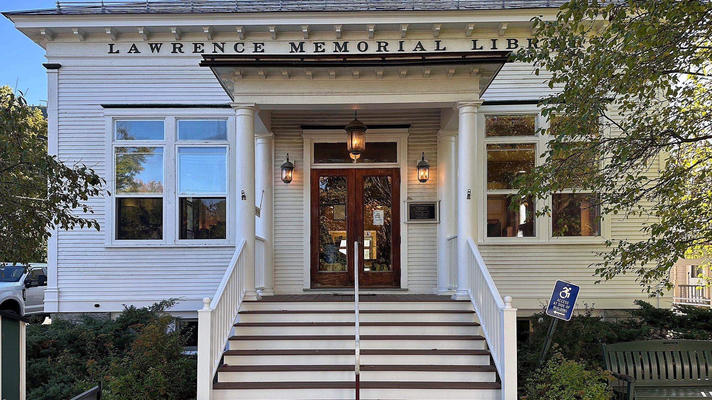
The building 1911 to today
The library was designed by architect Chas. E. Paige and built in 1911 in the classical revival style: wood frame, clapboard, a slate hipped roof and a stone foundation. The children's room was originally on the first floor, and the basement held a coal room and the furnace. A 1995 to 1997 accessibility renovation by Northern Architects of Burlington added the lift and entry addition and built out the lower level as the children's collection, multipurpose room, kitchenette and accessible bathroom that are there today.
The Town had the building's energy use assessed in 2022 and again in 2024, before and during the grant application.
Why the work was done From the grant agreement and the 2024 energy assessment
The grant behind this project comes with a specific purpose. The Vermont Department of Libraries agreement says the money is for renovating the library "to enable internet access for the purposes of work, education and health monitoring." In return, the Town must keep the building open as a public library with high-speed internet available to everyone for at least five years after the project is finished.
The 2024 energy assessment found a leaky building heated by oil. The whole library ran on a single oil-fired boiler installed in 1999, which burned 930 gallons of heating oil in 2022. There was no mechanical cooling or ventilation besides bathroom exhaust fans. A blower door test measured 0.62 cfm of air leakage per square foot of building shell, which the assessment rated "leaky." It also found missing and settled insulation in the exterior walls and no insulation at the band joists.
The assessment noted wear on the building too: water damage at the back entry roof from an incorrect drip edge, water damage at a column and a damaged basement window sill. The Town's photos from 2021 to 2025 show peeling paint, rotted trim and worn front steps (see the Photos tab).
What this page does not know yet
- The amended grant agreement. The increase appears in the State's grant ledger and the minutes; the amended agreement itself is not yet in the Town's project files.
- The final cost. The known cost is a floor, not a ceiling: several items are not yet priced, including the subfloor rebuild and the September joist work.
- A reopening date. The library's goal is the first week of December 2026, but no date is fixed. The grant deadline is December 31.
- The EPA notice. The final PCB report is done (October 26). The Town must send it to the EPA as its cleanup completion notice; this page does not yet show that it has.
History How the building got here
The library began in 1893 as a members' library in one room over a store. In 1910 W. A. Lawrence, a Bristol horse and farm machinery dealer, offered to build the town a library in memory of his two wives. It was dedicated in January 1911 and has been rearranged, extended and repaired many times since.
- Jan 20, 1893A group of residents forms the Bristol Library Association.
- Aug 1893The library opens in one room over the Patterson store, paid for by $2 memberships, $1 yearly tickets, gifts and public entertainments.
- Mar 1901Town meeting gives $50 toward a public library, raised to $200 in 1902 and 1903.
- Mar 1902The Library Association turns over its 1,095 books and its magazines to the town, and the Bristol Public Library is established. Kate I. Stewart is librarian from 1902 to 1926.
- 1906Minnie Peet Lawrence, W. A. Lawrence's second wife and a worker in the Library Association, is killed in a Rutland Railroad collision in Vergennes.
- Mar 1910Town meeting accepts Lawrence's offer to build a library and give it to the town, and sets aside $800 for the library that year. Architect Chas. E. Paige's drawings show a classical revival building with a coal-fired hot air furnace, a work room, a coal room and a smoking room in the basement.
- Jan 17, 1911The library is dedicated in memory of Lockie Partch Lawrence and Minnie Peet Lawrence. It has been the Lawrence Memorial Library ever since.
- 1915W. A. Lawrence dies. He left the town four tenement houses on Lawrence Lane and a two-tenement house beside the library, with the rents going to support it.
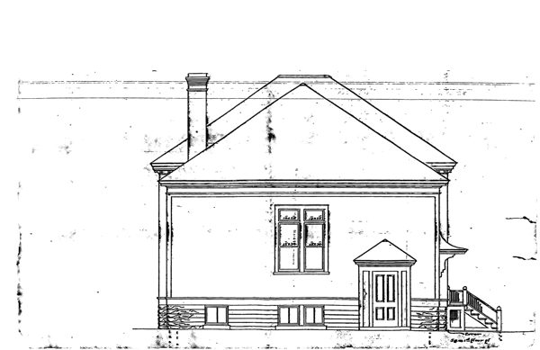
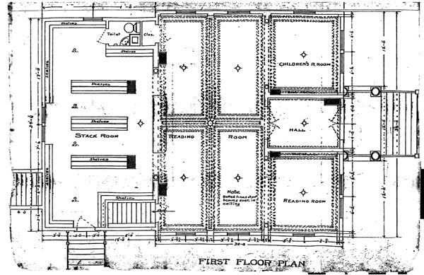
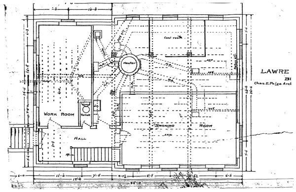
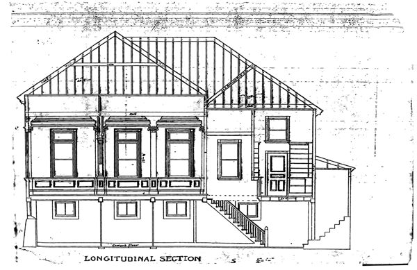
- 1940The library holds over 7,000 volumes and is open every afternoon and evening except Fridays and Sundays.
- 1972One wing of the two-tenement house beside the library is torn down for disrepair, making room for a Fire Department addition next door.
- 1979Two of the Lawrence Lane tenements are sold. The town's yearly appropriation has grown from $2,000 to $7,000 in twenty years, and a community education project has renovated the basement for courses.
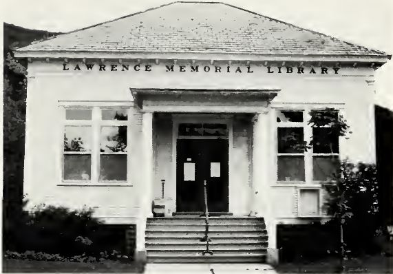
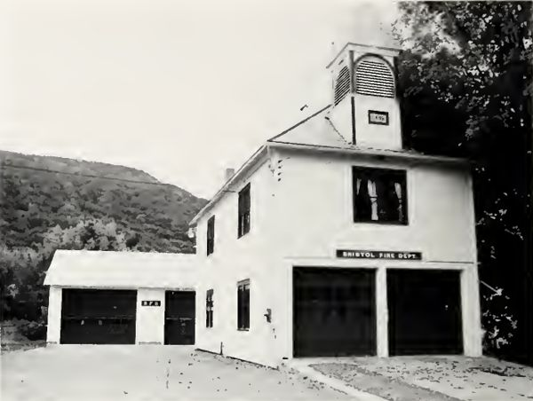
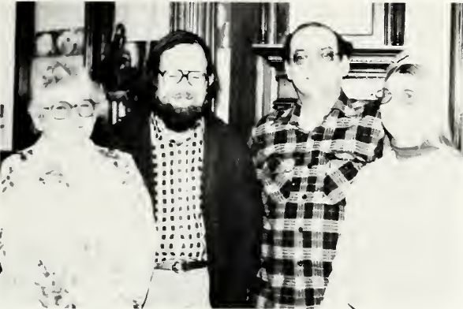
- Jan 19, 1995Northern Architects draws a new basement layout: a children's collection, a multipurpose room, an accessible bathroom and a lift in a small addition. Today's lower level matches it nearly room for room.
- 1997Design drawings and permits follow for the accessibility renovation, which adds the stair and lift on the north side.
- Nov 11, 2022Tom Bursey Designs delivers a historic assessment of the building, partly paid for by the Preservation Trust of Vermont. It finds the interior well kept and recommends exterior repairs and repainting, work on the front steps and a closer on the children's room fire door.
- Sep 1, 2024The grant period begins for the federal Capital Projects Fund money behind this renovation. The rest of the story is on the Timeline tab.
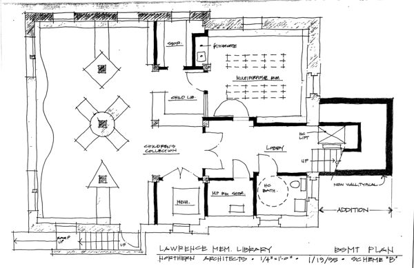
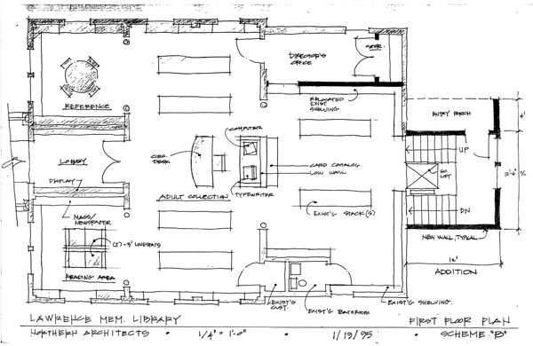
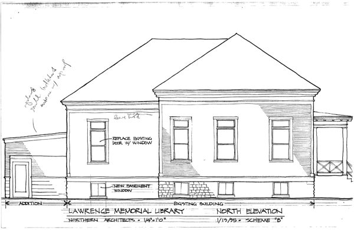
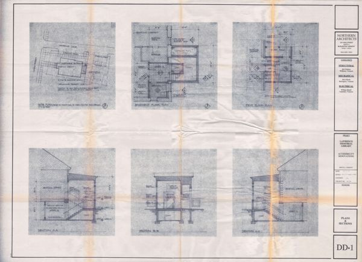
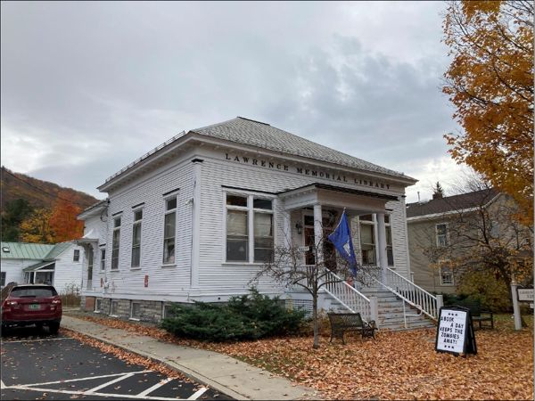
Where this comes from. The History of Bristol, Vermont (1940 and 1980 editions); the original drawings by Chas. E. Paige and the Northern Architects drawing set, project 1404, both in the Town's files; Tom Bursey Designs' Historic Architectural Assessment (November 11, 2022); and the Town's grant records. The 1980 history is the source for the 1972 and 1979 entries.
What the work includes as designed, and as changed
Heating and air
- Replace the oil boiler with a propane boiler; remove the fuel oil tank
- Ceiling cassette heat pumps upstairs, ductless heat pumps on the lower level
- Energy recovery ventilation (ERV) serving both floors, with MERV 13 filters and ductwork
- Heat plates under the new first floor, for the radiant systemAdded Jul 2026
Building envelope
- Dense-pack cellulose in the upper walls; insulate the sill beams
- Air-seal the attic and bring it to R-60
- Repair, air-seal and weatherstrip the main windows; add storm windows
- Rot repair to trim and siding
- Side door on Lawrence Lane: new canopy and storm glazing
- Replace an unneeded exterior door with a window
- Roof repair as needed
- Rebuild the front porch and stepsBid alternate
- Remove the chimneyAdded Apr 2026
Inside the library
- A soundproofed quiet room, with a transom window, in what was storage
- Walls around open areas extended to the ceiling
- An automatic closer on the Children's Room door, tied to the fire alarm
- Electrical updates
- Lead paint remediation and repainting
- New first-floor subfloor and finish flooring, after the PCB removalAdded Jul 2026
- Basement egress stairAdded Jul 2026
Why the floor is new. The first floor's hardwood was not part of the original plan. It had to come out when PCB testing found contamination in the carpet adhesive and the wood beneath it (see the cleanup section below). The finish floor is being chosen by the library. The first choice was solid white oak; in September the flooring distributor warned that the manufacturer's warranty does not cover solid wood nailed over radiant heat, and the selection moved to an engineered oak. As of September 17 the order was waiting on a physical sample; photos from October 26 show the new flooring going in.
Keeping the library open the pop-up at 74 Munsill Avenue
The library closed its North Street building to the public on March 10, 2026, expecting to reopen at the beginning of May while exterior work continued. Then asbestos turned up in the wall plaster and PCBs in the carpet adhesive. An eight-week closure is now heading toward nine months. Library staff kept the library running the whole time, first by email and with programs held off-site, then from a pop-up branch in the BristolWorks building, while also packing up the first floor so the cleanup could go ahead.
- Mar 10, 2026Last day of in-person service at 40 North Street. Returns go through the back-entrance book drop, and staff answer questions by email.
- Early MayThe library announces the project has run into delays. Loans are renewed automatically, and the monthly book club and weekly storytime move to off-site locations.
- Late MayAsbestos in the wall plaster and PCBs in the carpet adhesive are confirmed on the first floor. The library announces a pop-up location at BristolWorks.
- Jun 8A book drop opens at 74 Munsill Avenue, Suite 100.
- Jun 20The pop-up has its soft opening, together with the summer reading kickoff.
- Jun 22Regular pop-up hours begin, six days a week: 10 to 5 on Monday, Wednesday and Friday, 10 to 6 on Tuesday and Thursday, and 10 to 2 on Saturday. Patrons can borrow from a curated collection, read, play and attend programs, including storytime.
- Jun 29Asbestos cleanup begins on the first floor at North Street.
- JulThe library announces staff will pack up the first floor and store its contents in Howden Hall, so the PCB removal can begin.
- Oct 7Interlibrary loan requests are paused ahead of the move back.
- Oct 27Last day of service at the pop-up.Scheduled
- Early DecThe library's goal is to reopen at 40 North Street the first week of December.Goal
Where this comes from. The Lawrence Memorial Library's construction updates on its website, March through October 2026, and the Addison Independent (July 2, 2026).
How much air leaks out blower door, cfm at 75 pascals
A blower door test pulls air out of the building and measures how much leaks back in. Lower is tighter. The State's energy assessment tested the library before any work began; Green Mountain Enclosure Consulting ran a progress test on September 25, 2026, with the envelope work underway, and the final test on October 29, 2026.
The architect's drawings Vermont Integrated Architecture
About these drawings. These are sheets from the architect's drawings for the project, from the Town's project files. Tap a sheet to open it full size, or download the PDF. Drawings show what was designed, and the finished work can differ in small ways. Most sheets come from the March 19, 2026 drawing set. The sketch at the end was issued separately in April.
Plans
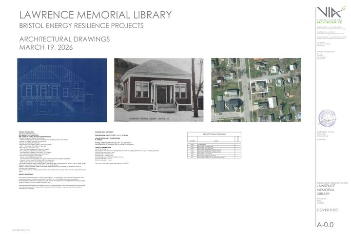
Cover sheet
Project information, building codes and the list of sheets.
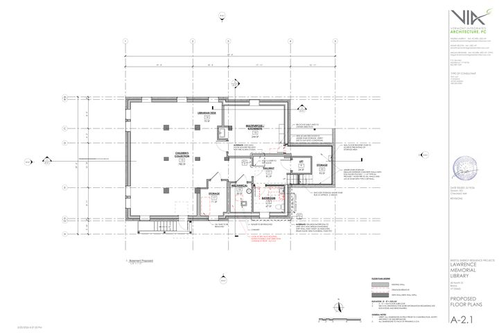
Basement floor plan
The lower level, with the new work marked.
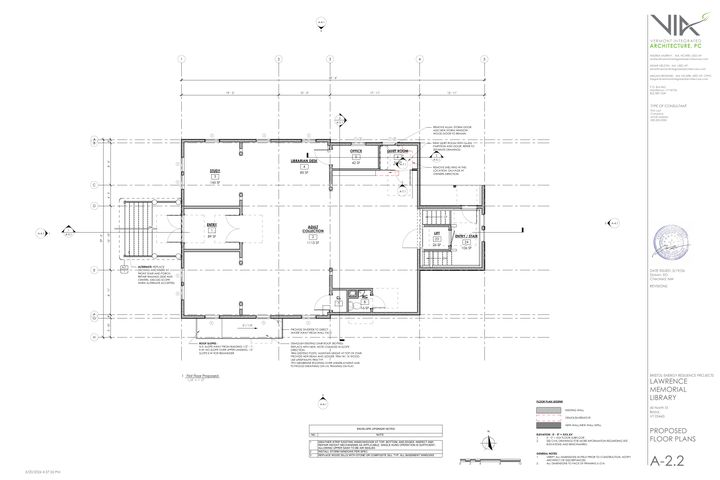
First floor plan
The main floor, including the new quiet room.
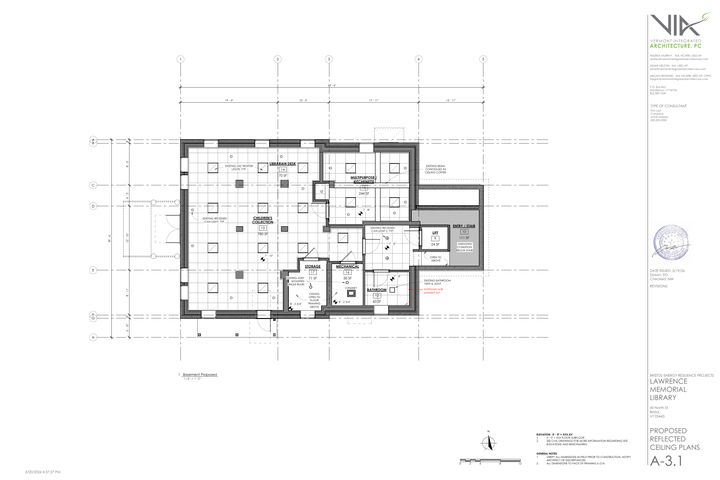
Basement reflected ceiling plan
The lower-level ceiling as seen from below: lights, grilles and other ceiling equipment.
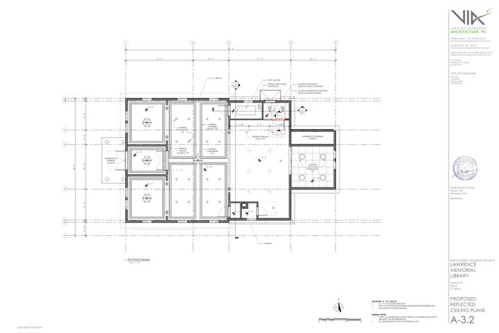
First floor reflected ceiling plan
The same view for the main floor.
Elevations, sections and details
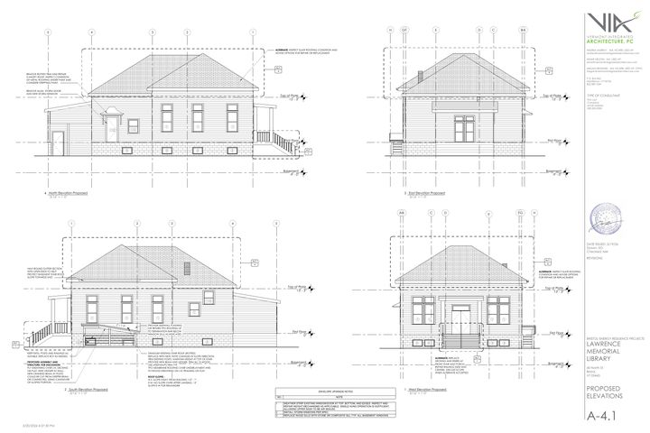
Elevations
All four sides of the building, including the rotted stair roof marked for replacement.
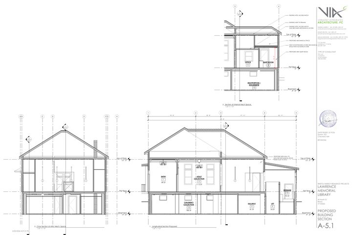
Building sections
Cuts through the building showing the new quiet room and the mechanical spaces.
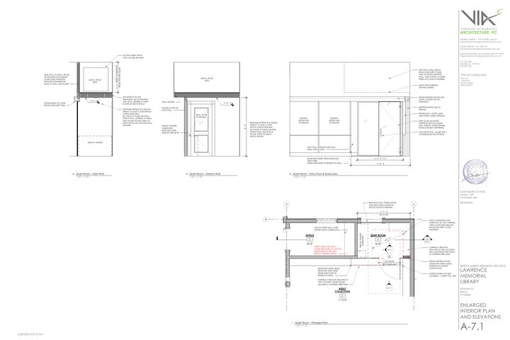
Quiet room plan and elevations
A close-up of the new quiet room.
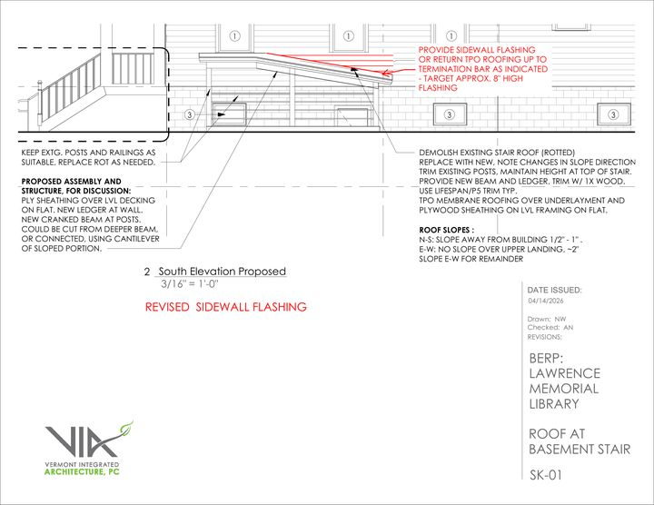
Roof at the basement stair
A sketch for replacing the rotted roof over the outside basement stairs.
Where the money comes from as of
| Source | Amount | What the record says |
|---|
It is all one grant. The Capital Projects Fund was created by the American Rescue Plan Act, which is why Town minutes sometimes call this "the ARPA library project." The PCB cleanup is paid from the same grant: the first change order was submitted against the contingency, and the State's August increase was described as covering the mitigation work and "a little bit more." The grant is a reimbursement, so the Town pays bills first and is paid back.
Contracts on record approved or signed
| Firm | Role | Amount | Approved or signed |
|---|
These are contract figures, not a project total. The design contract covers Holley Hall as well as the library. What has actually been paid and signed is below.
What it has cost so far through the October 26 warrant
The Town's check warrants record every payment the Selectboard approves. Here is where the library project stands through the October 26 warrant: the totals first, then how they work out to the Town's share.
How the Town's share works out
Every vendor line
| Vendor | Paid | Signed, not paid | Total |
|---|
Not yet priced each adds to the cost above
- Subfloor rebuild over the replaced joists. Silver Maple is doing this work on time and materials.
- Removing the three joist sections. Whether this is included in Alloy's September invoice has not yet been confirmed in writing.
- Blower door and envelope testing. Approved August 26; the price is not yet on file.
- Architect time through closeout. Vermont Integrated Architecture bills by the hour.
- Environmental oversight beyond what Clay Point has billed so far.
- Any work done December 16 to 31. It is eligible through December 31, but the last reimbursement request is due December 15.
Who is doing the work project partners
- General contractor and mechanical
 Silver Maple Construction
Silver Maple Construction - Architect
 Vermont Integrated Architecture
Vermont Integrated Architecture - MEP engineering
 DuBois & King
DuBois & King - Structural engineering
 Engineering Ventures
Engineering Ventures - Electrical
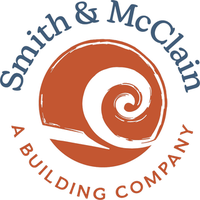
Smith & McClain - Envelope commissioning
 Green Mountain Enclosure Consulting
Green Mountain Enclosure Consulting - Chimney work
 G. Helms Construction
G. Helms Construction


Also on the project
- Clay Point AssociatesAsbestos, lead and PCB testing, bid documents and abatement oversight (Kyle Austin)
- Stone EnvironmentalPCB confirmation sampling and closure report (Jennifer Cypher, Daniel Voisin, Katrina Mattice)
- AlloyPCB abatement and asbestos cleanup (Brent Morgenstern, Paula Mullaney, Frank Aiello, David Morneault)
- Painting with PurposePainting, as a Silver Maple subcontractor
Thank you Draft listUnder review
A project like this takes a lot of people. Thank you to everyone who planned, built, tested, funded, inspected and put up with the work.
Library staff
- Katie Male-Riordan, Library Director
- Jen Lazar
- Rebekah Cameron
- Jill Quackenbush
- Gail Creeksong
- Jane Ploughman
- Lily Weaver
- Marita Schine
- Moth Nasta
Library Board of Trustees
- Vicki Coyle
- Sophie Pickens
- Peter Hewitt
- Kenneth Johnson
- Elizabeth Guilbeault
- Darren Klinefelter
- Scott Kluever
Town staff
- Greg Faust, Town Administrator
- Freeda Powers, Grant Administrator
- Sharon Lucia, Town Clerk and Treasurer
- Kris Perlee, Assistant Clerk and Treasurer
- AZ Larsen, Planning and Zoning Administrator
Selectboard
- Ian Albinson
- Joel Bouvier
- Peeker Heffernan
- Michelle Perlee
- Jessica Teets
Bristol Energy Committee
- David Flaschenriem
- Allison Pouliot
- Ben Skolozdra
Vermont Department of Libraries
- Catherine Delneo, State Librarian
- Tom McMurdo, Assistant State Librarian
- Jessica Leal
- Abe Koffman
Flooring and grounds
- David Babcock, Babcock's Vermont Carpet Gallery
- Dawn Crane, Rice Lumber
- Ed Burke, Rocky Dale Gardens
Efficiency programs
- Emily Eckert, Efficiency Vermont
- Matt Sharpe, Efficiency Vermont
- Eli Pereira, Green Mountain Power
The PCB cleanup spring to October 2026
Before construction went further, environmental consultant Clay Point Associates tested the building on April 9, 2026 for asbestos, lead paint and PCBs (polychlorinated biphenyls, industrial chemicals banned in 1979 that turn up in older building materials).
Asbestos was found in only one material: first-floor wall and ceiling plaster, at 2 percent. The job there was cleaning up dust and debris, not removing plaster, and it was finished by July 13. Lead paint was found and is handled within the renovation. PCBs were found in the brown carpet adhesive on the first floor at 140 mg/kg. Federal rules require material over 50 mg/kg to be removed and disposed of as PCB waste, so the carpet, the adhesive and the wood floor beneath it came out.
After removal, a second firm, Stone Environmental, takes confirmation samples. The cleanup standard is 1 mg/kg. It took three rounds to meet it, and Stone's final report, dated October 26, 2026, confirms the cleanup met that standard.
| Round | Result | Highest reading vs 1 mg/kg | What happened next |
|---|
The final report. Stone Environmental's PCB Abatement Completion Report, dated October 26, 2026, finds that the cleanup met its goal. Every material left in the cleaned area tested at or below 1 mg/kg, and everything that tested above it was removed. The joist sections came out under a structural engineer's review (site visit September 10, written guidance September 11), and new framing and subfloor followed. Two other results are in the report: the old window glazing tested below the lab's reporting limit, and a leach test on the removed flooring found no PCBs above the lab's limit. The Town, as the owner, must send the report to the U.S. Environmental Protection Agency's New England office as its notice that the cleanup is complete, and keep the cleanup records for at least five years.
Timeline
Photos
About these photos. They come from the Town's project photo folder and are arranged by the date each was taken. Those from 2018 through 2025 show the building's condition before construction. Tap any photo to see it larger.